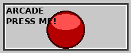

|
Welkom op mijn homepage!
Dit is mijn persoonlijke hoekje op het internet. Verwacht een mix van professioneel en een ongezonde dosis nostalgie:
mIRC, ICQ “Uh-oh!”, WinAmp, Encarta op CD-ROM en af en toe een Lemmings-moment.
Werk: Solution Consultant @ Palo Alto Networks Locatie: Nijlen Status:
Zoekmachines
Nieuwsflits (handmatig geüpdatet)
Nostalgie
|
Visitor Counter
0
(Echt. Maar per browser. Net als in 1995.)
Retrosounds
READY  Arcade drukknop (random) Klik = geluid
|